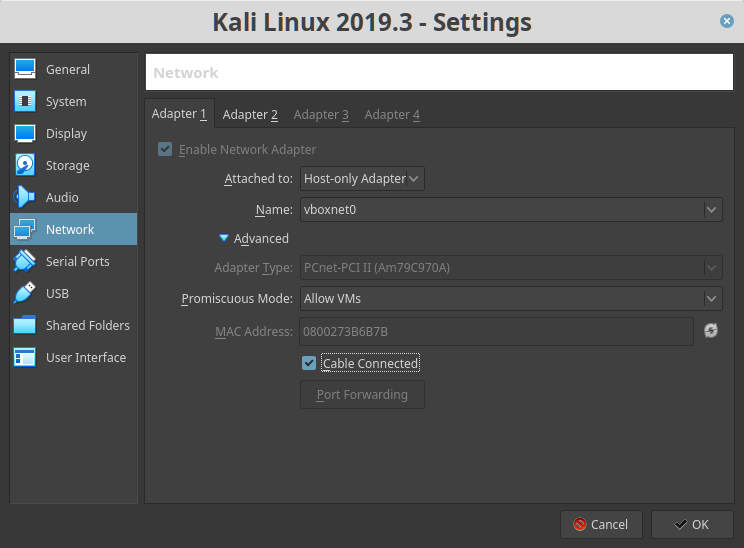

Vulnhub EVM: 1
Penetrating Methodologies
▸ 1. Scan Network
▸ 2. Apache Exploit. Port 80
▸ 2.1 Visit the website
▸ 2.2 Confirm directory
▸ 2.3 Wpscan
▸ 2.4 Bruceforce to get password
▸ 2.5 Exploitation
▸ 2.6 Privilege Escalation
Reference: https://www.vulnhub.com/entry/evm-1,391/
Walkthrough: https://www.hackingarticles.in/evm-1-vulnhub-walkthrough/
Download (Mirror): https://download.vulnhub.com/evm/EVM.ova
Download (Torrent): https://download.vulnhub.com/evm/EVM.ova.torrent
Install the machine on VirtualBox:
1. Download the file.
2. On Virtualbox choose File->Import Appliance.
3. Select the file “EVM.ova”.
4. Accept to import.
Virtual Machine Network Settings
Both Machines on “Host-only Adapter”.

Kali Linux Machine with the second adapter to NAT to have INTERNET connection.
Watch your Machine IP
Output:

Diagram
 Index
Index